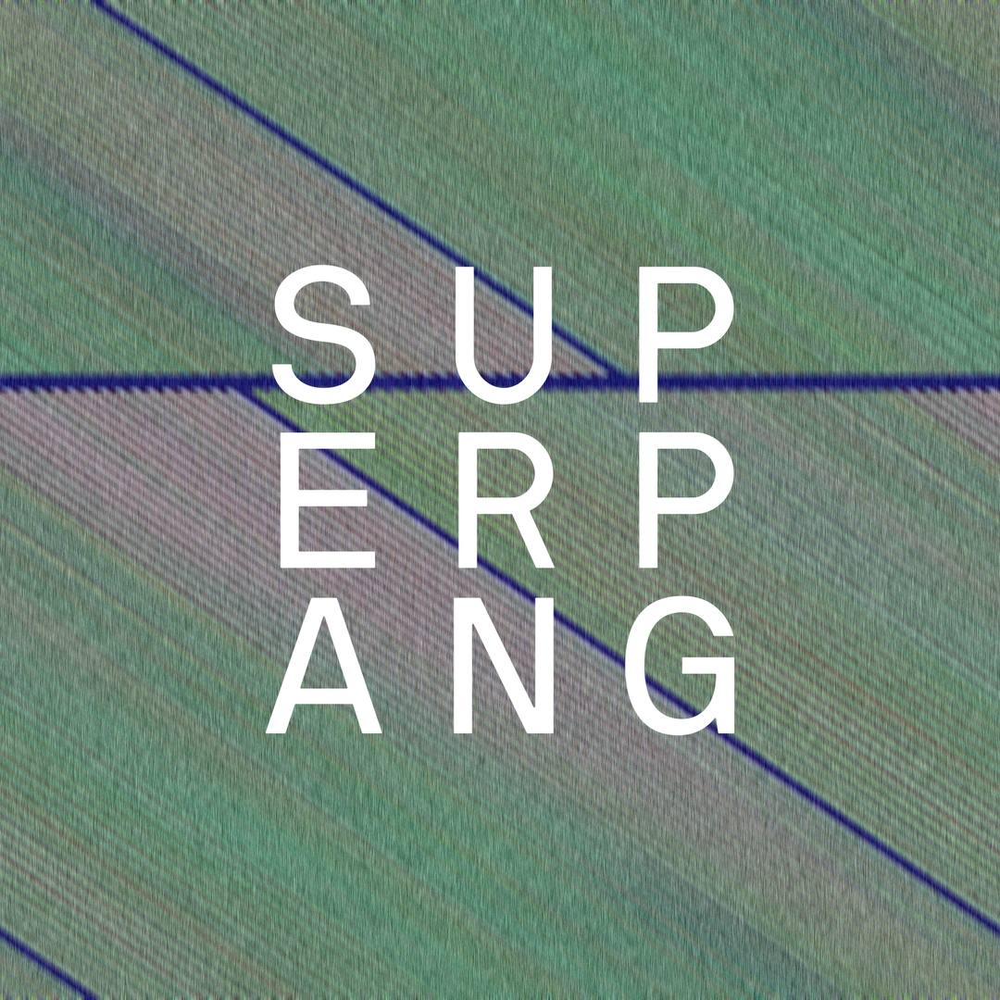
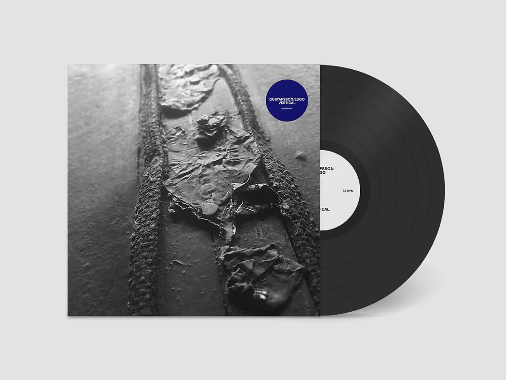
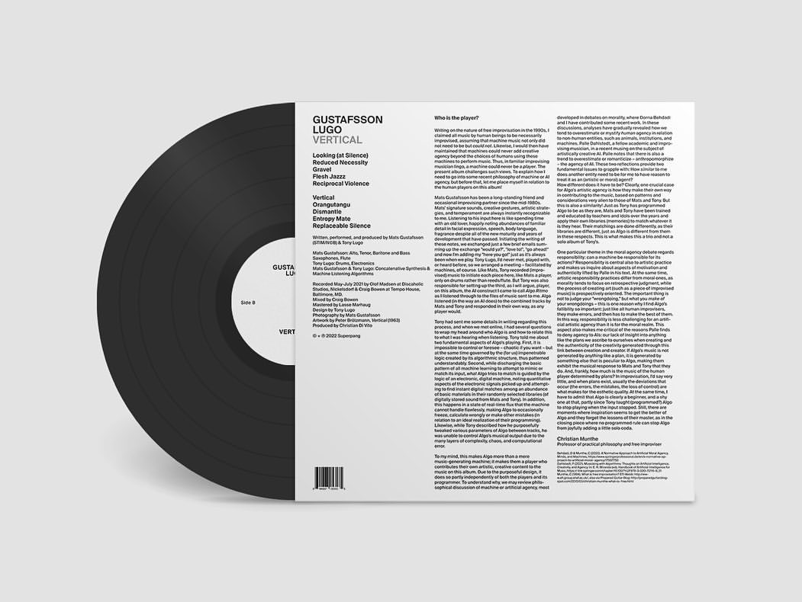

Visual works for music labels
Prego! - Chanbara
Promotional video for the second phisycal release from Superpang, Roma based experimental music label. This was created by FormLAB project.


GET THIS:
A Tribute to Peter Rehberg
Released from $pwgen 20 in Jan 2022. I am proud of involved in this project. The video was made based on the cover art by Tina Frank with the support of a0n0.
Vertical -
Gustafsson
Lugo
Video work for the LP from Mats Gustafson and Tony Lugo. It was the first phisycal release from Superpang, Roma based experimental music label.


a0n0
Visual works for my long time collaborator a0n0, Sendai based sound artist. I created motion images and album covers for his EPs and DJ mix.